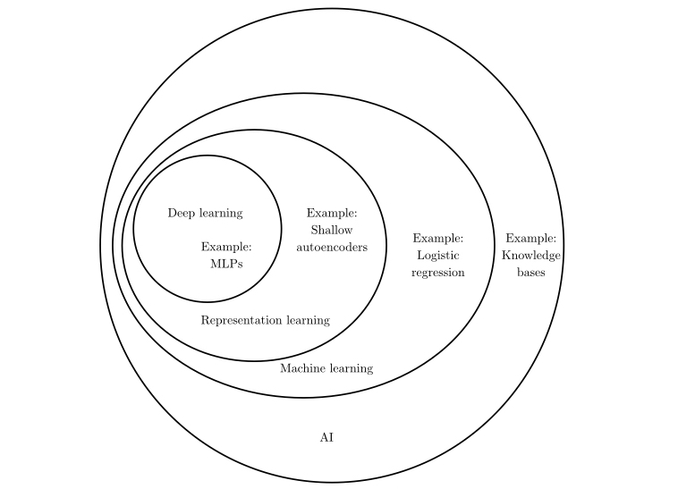

Deep Learning, Representation Learning, Machine Learning and AI
from:deeplearningbook
very broad term for a range of very different approaches e.g. knowledge based learning,
computer is hard-coded/provided with knowledge by humans in a formal language,
via logical rules it tries to deprive meaning from text;
problem of complexity to describe the world in formal language,
problem of humans as knowledge source rather than world itself
broad term for learning by extracting patterns from raw data,
e.g. providing machine with features of what you want the machine to learn;
human feature would be nose, problem of pixel values in images, shadows/obstructions, quality …
relatively defined term for a network that looks at representation itself,
designs features for itself (much faster than humans, organic/natural learning approach)
problem of complexity/multidimensionality of certain features like accent of human voice or edges
very specific term for a network that combines simpler concepts of representations like corners,
contours to more complex ones like object parts (see HOW IT WORKS"-illustration)
NNs, CNNs, RNNs, DCGANs, LSTMs, autoencoders